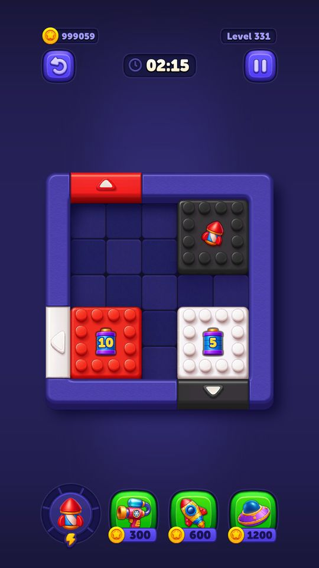
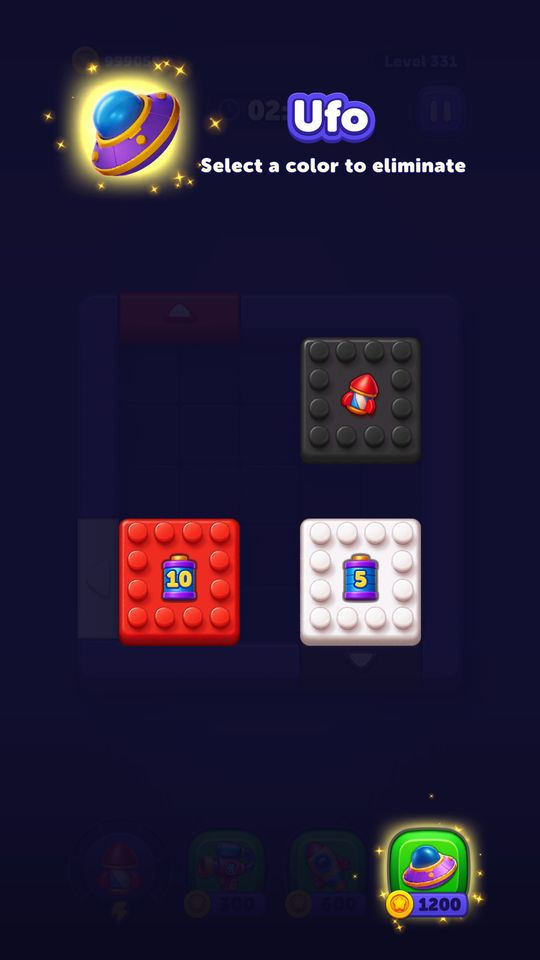
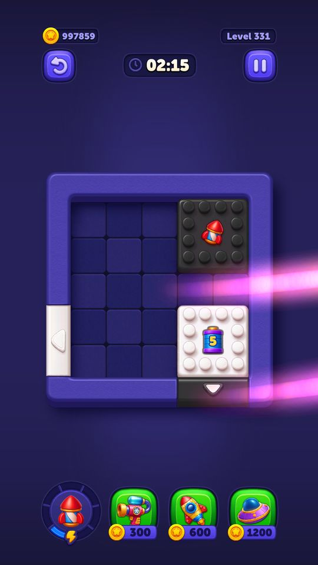
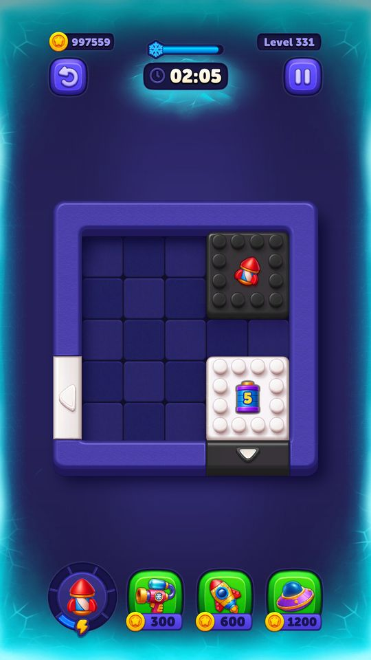
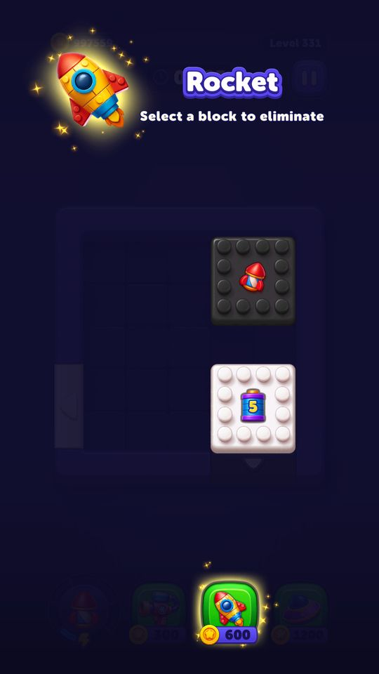
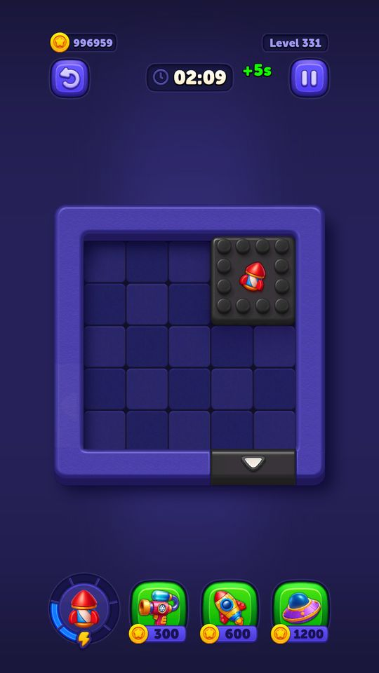

Booster trong màn (UFO / Rocket / Time Freeze)
Ba booster dùng ngay trong bàn.
Mô tả
- Ba booster dùng ngay trong bàn.
- UFO nhấc một khối bất kỳ ra khỏi bàn không cần đưa tới cửa.
- Rocket bắn phá một khối.
- Time Freeze đóng băng đồng hồ màn (và cả đồng hồ bom) trong 10 giây.
- Mỗi booster là một loại tiền tệ riêng trong kho (CurrencyType Ufo=3, Rocket=4, TimeFreeze=5); hết hàng thì nút đổi sang mua nhanh bằng coin.
Còn thiếu / chưa xác minh
Mở khóa & điểm vào
Có sẵn từ đầu — người chơi mới được tặng 3 cái mỗi loại (initialUfoAmount / initialRocketAmount / initialTimeFreezeAmount = 3).
Điểm vào:
- Ba nút ở đáy màn chơi
Cách hoạt động
- BoosterButton theo dõi kho đồ; còn hàng thì hiện BoosterInventoryView với số lượng, hết hàng thì hiện BoosterPurchaseView với giá coin.
- Bấm nút gọi BoosterManager.TryUseBooster(currencyType).
- Trước tiên CanUseBooster kiểm tra điều kiện riêng từng loại: cả ba đều đòi IsBoardStopped() (không có khối đang bay/đang kéo); UFO và Rocket còn đòi IsThereAnyBlockOnBoard() qua GamePlayItemsData.GetClickables(); Time Freeze bị chặn nếu LevelTimer.IsFreezeTimeActive() đang bật sẵn.
- Đạt điều kiện thì UseBooster chạy: với UFO và Rocket, GamePlayInputSystem.WaitForBlockSelection() chờ người chơi chỉ khối, nền tối lại (OnSelectionBackgroundShowStarted); với Time Freeze thì áp dụng ngay.
- Sau animation, SpendBooster(currencyType) mới thực sự trừ kho.
- Các animation controller riêng lo phần nhìn: UfoBoosterAnimationController, RocketBoosterAnimationController, FreezeTimeBoosterAnimationController.
Luồng chi tiết theo code
BoosterButton theo dõi kho đồ; còn hàng thì hiện BoosterInventoryView với số lượng, hết hàng thì hiện BoosterPurchaseView với giá coin. Bấm nút gọi BoosterManager.TryUseBooster(currencyType). Trước tiên CanUseBooster kiểm tra điều kiện riêng từng loại: cả ba đều đòi IsBoardStopped() (không có khối đang bay/đang kéo); UFO và Rocket còn đòi IsThereAnyBlockOnBoard() qua GamePlayItemsData.GetClickables(); Time Freeze bị chặn nếu LevelTimer.IsFreezeTimeActive() đang bật sẵn. Đạt điều kiện thì UseBooster chạy: với UFO và Rocket, GamePlayInputSystem.WaitForBlockSelection() chờ người chơi chỉ khối, nền tối lại (OnSelectionBackgroundShowStarted); với Time Freeze thì áp dụng ngay. Sau animation, SpendBooster(currencyType) mới thực sự trừ kho. Các animation controller riêng lo phần nhìn: UfoBoosterAnimationController, RocketBoosterAnimationController, FreezeTimeBoosterAnimationController.
Ảnh chụp màn hình (6)
6 ảnh chụp trong game (LDPlayer, bản 1006, tài khoản thử level 320 → 350 (07/10/2026)). Bấm ảnh để phóng to; nhãn UC dẫn tới use case tương ứng.


 1.200 coin
1.200 coin

1.200 coin): chế độ chọn "Ufo — Select a color to eliminate", bàn tối đi trừ các khối có thể chọn

1.200 coin (999.059 → 997.859)

300 coin): đồng hồ đóng băng — viền màn hình phủ băng xanh, thanh đếm tuyết trên đồng hồ (dừng thời gian 10 giây)

600 coin): "Select a block to eliminate" — chọn 1 khối để phá

Use case (7)
Bấm vào từng use case để mở. Mở/đóng tất cả
UC-01 Hiện nút booster: còn hàng hay phải mua
Các bước- BoosterButton đăng ký sự kiện đổi kho của InventoryService
- Số lượng > 0 -> BoosterInventoryView hiện số
- Số lượng = 0 -> BoosterPurchaseView hiện giá coin
- Giá lấy từ GameEconomyModel.GetPriceByCurrency(currencyType)
| Actor | System |
|---|---|
| Trigger | Vào màn hoặc kho đồ đổi |
| Điều kiện | - |
| Kết quả | Người chơi thấy ngay còn mấy cái hoặc phải trả bao nhiêu |
| Quy tắc / số liệu | GetPriceByCurrency giải mã thành: TimeFreeze -> TimeFreezePrice (300), Rocket -> RocketPrice (600), Ufo -> UfoPrice (1200), còn lại trả mặc định 100 |
| Evidence | BoosterButton; BoosterInventoryView; BoosterPurchaseView; GameEconomyModel.GetPriceByCurrency (pseudo-C đọc được nguyên cây if) |
UC-02 Dùng UFO xử lý tập khối cùng màu đủ điều kiện
Các bước- TryUseBooster(CurrencyType.Ufo) -> CanUseBooster -> CanUseUfo()
- CanUseUfo kiểm tra IsBoardStopped() và GamePlayItemsData.GetClickables().Count > 0
- UseBooster -> UseUfo() -> WaitForBlockSelection()
- OnSelectionBackgroundShowStarted làm tối nền
- Board.OnUfoBoosterUsed dựng danh sách các clickable cùng màu và cùng trạng thái sao với khối chọn; chỉ thêm mục tiêu có OnBoosterUsageCanExitDoor = true
- Người chơi chỉ khối -> UfoBoosterAnimationController chạy animation, khối vào BlockSortState.UfoAnimation
- Vật cản trên khối nhận OnBelongingBlockSelectedByBooster và OnBoosterUsageCanExitDoor
- SpendBooster(Ufo) trừ kho, BlockAnimType.ComingUfoBooster
| Actor | Player |
|---|---|
| Trigger | Bấm nút UFO rồi chỉ vào khối |
| Điều kiện | Còn UFO hoặc đủ coin; bàn đang đứng yên; còn khối trên bàn |
| Kết quả | Tập khối cùng màu, cùng trạng thái sao và được obstacle cho phép bị xử lý; khối nhiều lớp có thể để lộ lớp kế |
| Quy tắc / số liệu | Giá mua nhanh 1200 coin. Board.OnUfoBoosterUsed lọc màu, HasStarObstacle và OnBoosterUsageCanExitDoor. Không bảo đảm mọi khối ẩn hoặc lớp tương lai đều thuộc tập clickable hiện tại. Test 10/10: một UFO xử lý bốn khối/lớp vàng, UFO 999→998, bộ đếm cửa 11→7. |
| Evidence | BoosterManager.CanUseUfo; IsBoardStopped; GamePlayItemsData.GetClickables; UseUfo; UfoBoosterAnimationController; SpendBooster; Board.<OnUfoBoosterUsed>d__46.MoveNext; BO-T12 / BO-21-ufo-result.png |
UC-03 Dùng Rocket phá khối
Các bước- CanUseRocket() cùng điều kiện với UFO
- UseRocket() -> WaitForBlockSelection()
- RocketBoosterAnimationController bắn rocket, BlockAnimType.ComingRocketBooster
- GamePlayInputSystem.OnSuperRocketHitToBlock(block)
- SpendBooster(Rocket)
| Actor | Player |
|---|---|
| Trigger | Bấm nút Rocket rồi chỉ vào khối |
| Điều kiện | Giống UFO |
| Kết quả | Khối bị phá tại chỗ |
| Quy tắc / số liệu | Giá mua nhanh 600 coin |
| Evidence | BoosterManager.CanUseRocket; UseRocket; RocketBoosterAnimationController; enum BlockAnimType |
UC-04 Dùng Time Freeze đóng băng đồng hồ
Các bước- CanUseTimeFreeze() kiểm tra LevelTimer.IsFreezeTimeActive() — đang bật thì từ chối
- UseTimeFreeze() áp dụng ngay, không cần chọn khối
- FreezeTimeBoosterAnimationController chạy hiệu ứng
- BombBlockObstacle.OnFreezeTimerUsed() đóng băng cả đồng hồ bom
- SpendBooster(TimeFreeze)
| Actor | Player |
|---|---|
| Trigger | Bấm nút Time Freeze |
| Điều kiện | Đồng hồ chưa bị đóng băng sẵn |
| Kết quả | Đồng hồ dừng 10 giây |
| Quy tắc / số liệu | timeFreezeDurationAsSeconds = 10 (cả client lẫn server). Giá mua nhanh 300 coin. rootLevelConfigModel.isNewFreezeTimerEnabled = true trên server |
| Evidence | BoosterManager.CanUseTimeFreeze; LevelTimer.IsFreezeTimeActive; UseTimeFreeze; BombBlockObstacle.OnFreezeTimerUsed; GameEconomyModel.TimeFreezeDurationAsSeconds |
UC-05 Hết booster, mua nhanh bằng coin
Các bước- BoosterPurchaseView hiện giá
- Đủ coin -> InventoryService.Spend(CurrencySpendReason.Boosters, Coin, giá) rồi Earn booster
- Không đủ coin -> mở store với StorePopUpSource.Booster (GamePlayStateManager.StorePauseState)
| Actor | Player |
|---|---|
| Trigger | Bấm nút booster khi số lượng = 0 |
| Điều kiện | - |
| Kết quả | Mua xong dùng luôn, hoặc bị dẫn sang cửa hàng |
| Quy tắc / số liệu | CurrencySpendReason.Boosters = 1 |
| Evidence | BoosterPurchaseView; InventoryService.Spend; enum CurrencySpendReason; enum StorePopUpSource |
UC-06 Huỷ giữa chừng khi đang chọn khối
Các bước- OnClickedToUIOnBlockSelection huỷ Task chọn khối
- OnSelectionBackgroundHideStarted rồi OnSelectionBackgroundHideEnd trả nền về bình thường
- Kho đồ không bị trừ vì SpendBooster chỉ chạy sau animation
| Actor | Player |
|---|---|
| Trigger | Chạm ra ngoài hoặc bấm nút booster lần nữa |
| Điều kiện | Đang ở chế độ chọn khối |
| Kết quả | Không mất booster khi đổi ý |
| Quy tắc / số liệu | Thứ tự trừ kho sau animation là có chủ ý — huỷ giữa chừng thì không mất gì |
| Evidence | BoosterManager.OnSelectionBackgroundHideStarted; OnSelectionBackgroundHideEnd; GamePlayInputSystem.OnClickedToUIOnBlockSelection; SpendBooster |
UC-07 Booster bị chặn khi bàn đang động
Các bước- IsBoardStopped() trả false
- CanUseBooster trả false, TryUseBooster trả false
- Nút không phản hồi
| Actor | System |
|---|---|
| Trigger | Bấm booster lúc khối đang bay ra cửa |
| Điều kiện | - |
| Kết quả | Tránh lỗi trạng thái khi animation đang chạy |
| Quy tắc / số liệu | Áp dụng cho cả ba booster |
| Evidence | BoosterManager.IsBoardStopped; CanUseBooster; TryUseBooster |
Cấu hình (2)
Gộp mọi nguồn: const trong code, JSON mặc định trong Resources, bảng static, storage key, AB test, cờ server.
| Nguồn | Key | Kiểu | Giá trị | Ý nghĩa | Nơi định nghĩa |
|---|---|---|---|---|---|
| code const | CurrencyType (phần booster) | enum | Ufo=3, Rocket=4, TimeFreeze=5, RocketLightBall=16, DurationLightBall=17 | Booster được lưu như tiền tệ trong kho, không phải kho riêng | enum CurrencyType |
| code const | GameEconomyModel.GetPriceByCurrency | method | TimeFreeze→TimeFreezePrice, Ufo→UfoPrice, Rocket→RocketPrice, mặc định→100 | Cây giá đọc thẳng được từ pseudo-C; giá trị mặc định 100 cho loại không khai báo | PseudoC/.../RemoteConfig/Scripts/GameEconomyModel.c |
Giao diện (UI)
| Element | Class | Mục đích |
|---|---|---|
| Nút booster | Modules.Contexts.GamePlay.Boosters.Scripts.BoosterButton | một nút cho mỗi loại |
| Khung chứa nút | Modules.Contexts.GamePlay.Boosters.Scripts.BoosterButtonsContainer | bố cục hàng nút |
| Hiệu ứng nút | Modules.Contexts.GamePlay.UI.BoosterButtonAnimationHandler | nhấp nháy gợi ý khi người chơi bí |
Chưa đọc được / ghi chú
- BoosterStats chỉ có vài method, chưa rõ nó gửi thống kê đi đâu.
- Điều kiện chính xác để BoosterButtonAnimationHandler bật gợi ý (bao lâu không thao tác) chưa dò ra.
Tính năng liên quan
Power-up sinh trong bàn (Rocket / Duration) Pre-Booster (mua power-up trước khi vào màn) Cửa hàng Vòng đời màn chơi Inventory
Nguồn đã đọc
- PseudoC/.../GamePlay/Boosters/Scripts/BoosterManager.c
- PseudoC/.../RemoteConfig/Scripts/GameEconomyModel.c
- Assets/Resources/defaultconfigs/GameEconomyModel.json